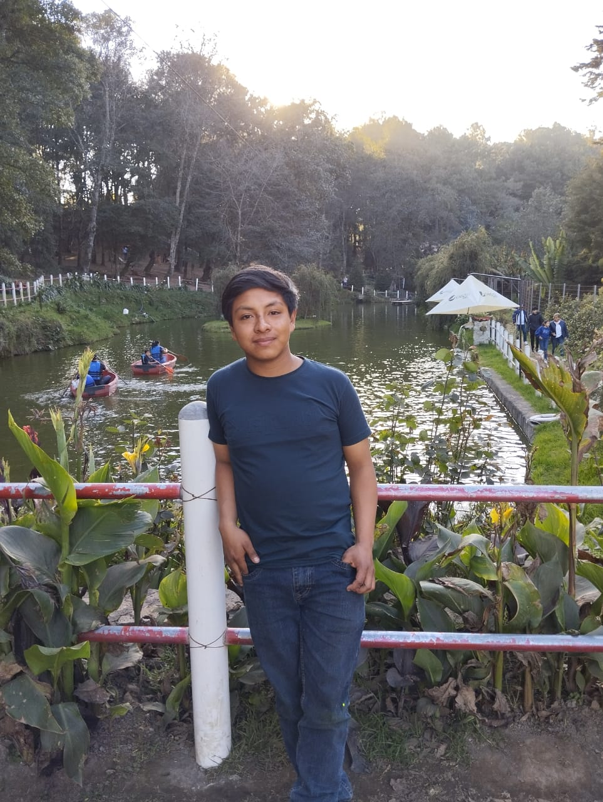
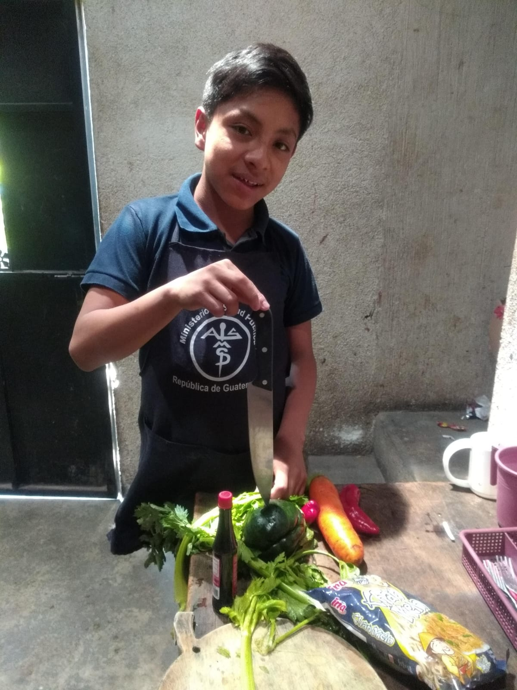
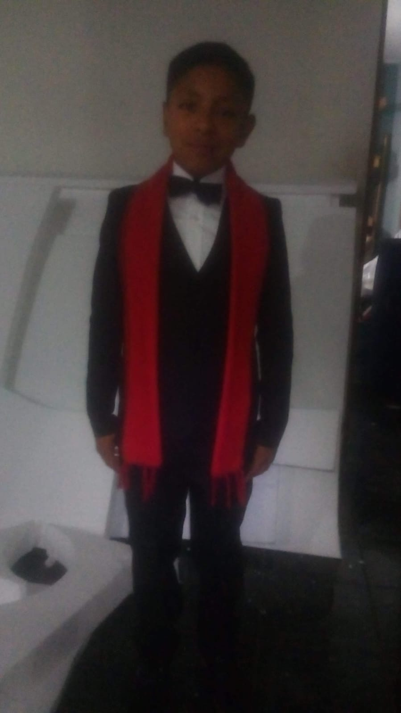

Nombre: Byron Fernando Roquel Batzibal
Nacionalidad: Guatemalteco
Edad: 18
Carrera: Informatica
Hola mi nombre es Byron Fernando Roquel Batzibal y soy un joven estudiante de kinal, actualmente curso el 3er año de informatica y voy a redactar mi autobiografía hasta este punto de mi vida.

Naci un día domingo 6 de noviembre del 2005, soy el segundo hijo de mis padres y también el ultimo ya que cuento con una hermana mayor , soy originario de Santa Apolonia, Chimaltenango, a la edad de 6 años comence mis estudios en la escuela Mario Mendez Montenegro en el año 2012, en el año 2018 termine mis estudios primarios.
En el año 2019, a la edad de 13 años comence mis estudios básicos en el Centro Escolar San Vicente de Paúl de Técpan, Guatemala, pero en el 2020 da inicio la pandemia para Guatemala por lo que la vida dio una vuelta completa ya que todo practicamente cambió iniciaron las clases virtuales a lo cual fue un poco dificil adaptarse pero lo logre conseguir y en octubre del 2021 logre salir de tercero básico.
En el año 2022 inicié mis estudios de diversificado en kinal en la carrera de informática logrando tener dos buenos años de estudio. Actualmente espero poder graduarme de mi ultimo año con buenas calificaciones y sin ninguna novedad. Espero poder ganar una beca o conseguir una oportunidad de trabajo en la que pueda crecer y ser mejor.
Durante este año estudiantil quiero lograr graduarme de périto en informática sin ninguna novedad, y poder ganarme una beca para poder seguir con mis estudios universitarios también quiero ser un buen estudiante y trabajador, uno de mis sueños es poder estudiar en la universidad del valle de Gautemala, también quiero llegar a ser un ingeniero en sistemas y poder superarme a mi mismo para ser cada día mejor.

Durante mi vida he descubierto muchas habilidades desde pequeño las cuales he aprovechado y por ellas mismas he tenido muchas oportunidades, desde pequeño me gustó el fútbol un deporte el cual he aprovechado al máximo por lo cual tuve la oportunidad de estar en una academia de futbol en la cual estuvimos en una competición contra otros municipios en distintos departamentos por lo cual conocí muchos lugares bonitos y personas y amistades en el fútbol, incluso tuve la oportunidad de tener un tour por el estadio nacional de guatemala e incluso poder jugar en el mismo, también tuve la oprtunidad de poder conocer las distintas federaciones de deportes de Gautemala hasta el día de hoy sigo practicando y ejercitando mi habilidad acerca del futbol
Asi también a los 8 años tuve la oprtunidad de entrar a una academia de música por parte de la municipalidad en la cual aprendí a ejecutar la marimba con la cual tuve la oprtunidad de poder participar en multiples conciertos y conocer a mas musicos. Tambien tuve la oprtunidad de tocar 2 veces en el Palacio Nacional de Guatemala